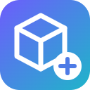
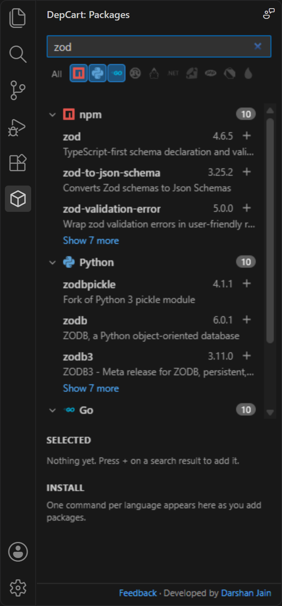
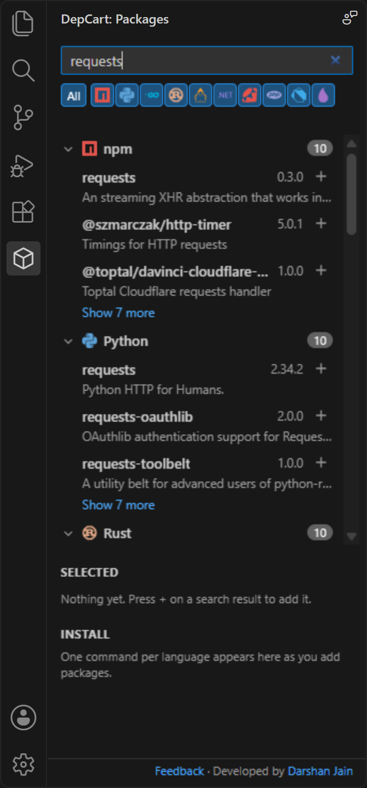
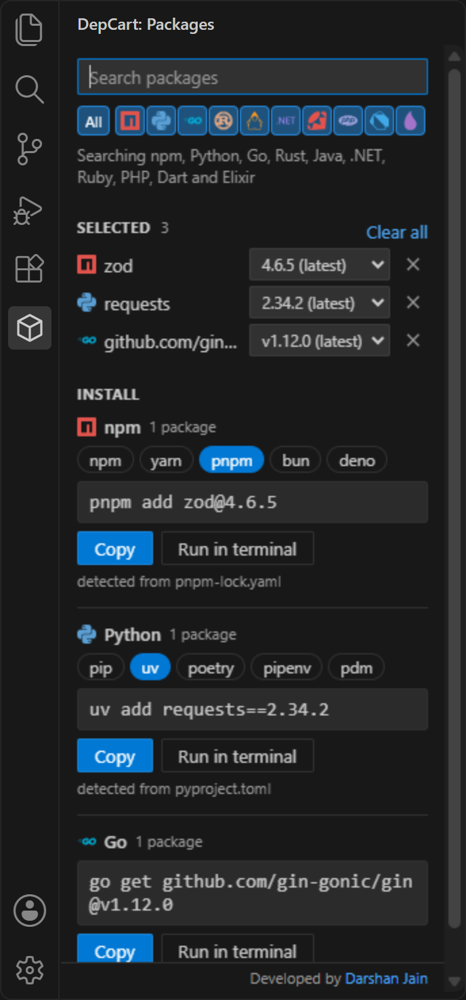

One search box
Search every language at once or toggle just the ones you need. The languages your project uses are switched on automatically.

DepCartFree VS Code extension · now on the Marketplace
Search npm, PyPI, Go, crates.io, Maven, NuGet, RubyGems, Packagist, pub.dev and Hex without leaving your editor. Pick exact versions, and get the install command your project actually uses.
Works with VS Code 1.90+ · MIT licensed · no telemetry
Why DepCart
npmjs.com for the frontend, pypi.org for the scripts, pkg.go.dev for the service, then guessing whether this repo uses npm or pnpm, pip or uv. DepCart puts all of it in your editor.
Search every language at once or toggle just the ones you need. The languages your project uses are switched on automatically.
Results grouped by language with registry logos. Exact name matches rise to the top; click a name to open its registry page.
Pick any published version. Stable releases come first, so hundreds of nightly builds never bury the one you want.
npm packages and Go modules never share a command. Copy it, or run it in a terminal opened at your project.
pnpm-lock.yaml means pnpm, uv.lock means uv, a Flutter pubspec.yaml means flutter pub. Your choice is remembered.
Names and versions are validated before they reach a command, so a malicious package name can't inject shell syntax or flags.
How it picks the tool
Click a file. DepCart looks at the top of your workspace and writes the command for the tool you already use.
Languages
Search npm packages, Python packages on PyPI, Go modules, Rust crates, Maven and Gradle dependencies, NuGet packages, Ruby gems, PHP Composer packages, Dart and Flutter packages and Elixir Hex packages.
See it



Open source
DepCart is brand new and grows with your feedback. Tell me what's missing, what broke, or which registry you want next, or jump in and build it.
Something off? Tell me the registry, what you searched and what happened.
Open a bug report →An idea that would save you time? Every request is read.
Share an idea →CocoaPods, Conan, rye, vlt? Ask for the registry or install tool you use.
Request one →TypeScript, tests included, one file per registry. Good first issues are labelled.
Read the guide →Enjoying DepCart? Star it on GitHub or rate it on the Marketplace. It helps other developers find it.
FAQ
Install DepCart from the VS Code Marketplace, click the DepCart icon in the Activity Bar and type a package name. Results from npm (and any other registry you switch on) appear grouped by language; press + to add a package and pick its version.
Yes. DepCart searches PyPI and builds the command for pip, uv, poetry, pipenv or pdm. It picks the tool your project uses from files like uv.lock, poetry.lock or Pipfile, and you can copy the command or run it in a VS Code terminal.
Yes. For JavaScript and TypeScript packages DepCart writes npm install, yarn add, pnpm add, bun add or deno add commands, and detects the right one from your lockfile (package-lock.json, yarn.lock, pnpm-lock.yaml, bun.lock or deno.json).
Ten: npm, PyPI, Go modules, crates.io (Rust), Maven Central (Java and Kotlin), NuGet (.NET), RubyGems, Packagist (PHP), pub.dev (Dart and Flutter) and Hex (Elixir).
No. DepCart builds the exact install command, one per language, for the tool your project uses. You copy it or run it in a terminal opened at your project folder, so your package manager stays in charge.
DepCart is free and open source under the MIT license. It has no telemetry and no servers of its own; your search text goes only to the registries you switch on and the ecosyste.ms package index used as a backup.
Use the Feedback link at the bottom of the DepCart sidebar or open an issue on GitHub to report a bug, suggest a feature, or ask for another registry or install tool. DepCart is MIT-licensed open source: read the contributing guide, pick a good first issue and send a pull request.
Free on the VS Code Marketplace
code --install-extension djain912.depcart.vsix and use … → Install from VSIX… in the Extensions view.Search text goes only to the registries you switch on and the ecosyste.ms backup index. No servers of our own, no telemetry. Privacy details